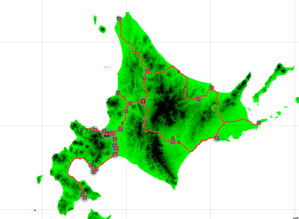
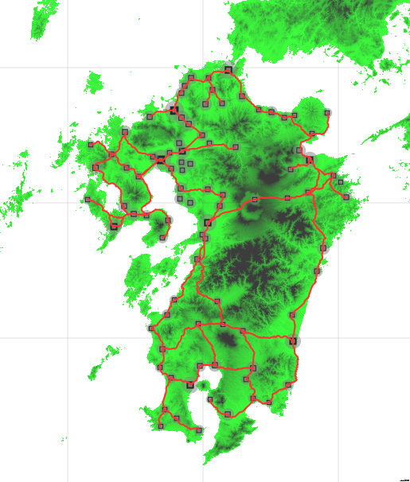

公開日 : 2021/02/03
任意の地形図と都市のデータに応じて、鉄道の路線網を生成するアルゴリズムの研究。
様々なコンピュータアルゴリズムを組み合わせることで、パラメータに応じた最適な路線網を
出力できる仕組みを開発することを目標としている。
第一実装
 
GitHub(ソースコードの保管のみ)
一度目の実装。
結果の出力には自作GUIプラットフォーム「cairo_picker」(「ソフトウェア開発実績」の項を参照)を用いている。
基本的な処理の流れ、及び使用するアルゴリズムやデータ構造を確定した。
実際に画像として出力させることによって、生成した路線が多くの点で
実際の路線と共通していることに驚き、研究テーマとしてのさらなる可能性を感じた。
しかし、本実装には様々な課題がある。最も大きな問題は処理時間である。
特に上図の九州の路線では、自宅のPC環境において生成に約40分(要再検証)を要している。
この問題の主な要因は、アルゴリズムによる最適化の不十分さである。
例えば、クラスカル法(下記参照)の最適化が不足している。
都市間のすべてのパスの組み合わせを参照するため、コストを計算するパスがあまりにも多くなっている。
解決法としては、DBSCANなどで用いている空間インデックス(R-tree)を再利用して、各都市の
最近傍点問題を解き、コストを計算するパス数を限定することで、大幅な改善ができる可能性がある。
また、A*探索の最適化も不十分である。クオリティが上がるごとに、計算量が二次関数的に伸びている。
解決法としては、高クオリティな探索を最初から一気に行わないようにすればよい思われる。
あらかじめ低クオリティな探索を行ってから、その結果をもとに一つ上のクオリティの探索を行い、
それを繰り返すことによって段階的にクオリティを上げていく、といった方針をとることで改善が見込める。
|
使用したアルゴリズム |
||
| DBSCAN |
都市圏の決定に利用。 都市圏を設定し、路線網を中心都市のみに繋げることにより 大きな都市に路線のターミナルが自動的に配置されるようになる。 実装には空間インデックス(R-tree)も利用。 |
|
| A*探索 |
2都市間の路線の進路の決定、及びその設置コストの算出に利用。 地形の高さや高低差や両都市の人口・距離、付近の都市の情報などを元にコストを算出し、 それを元にした最適経路問題を解くことで、進路を決定する。 (このとき、算出したコストの合計を路線全体の設置コストとする。) また、進路のクオリティを指定することもできる。 内部の計算で用いるときはクオリティを落として計算量を削減し、 結果の出力で用いるときは最大にすることで精密な進路を出力する。 実装には素集合データ構造(Union-Find木)、空間インデックスといったデータ構造も利用。 |
|
| クラスカル法 |
最小全域木を解くアルゴリズムとして、都市圏の情報をもとにした路線網の決定に利用。 A*探索で求めた都市間のコストをグラフの重みとして、その合計が最小となるような 全都市圏を結ぶ路線を算出することで、路線網決定を行う。 なお実際の路線決定では、一部の閉路を許容し全域木に取り込むことによって コストの低い路線をさらに多く確保し、より現実的な路線網を生成するようにしている。 実装には探索アルゴリズム(ダイクストラ法)も利用。 |
|
第二実装
現在、計画中である。